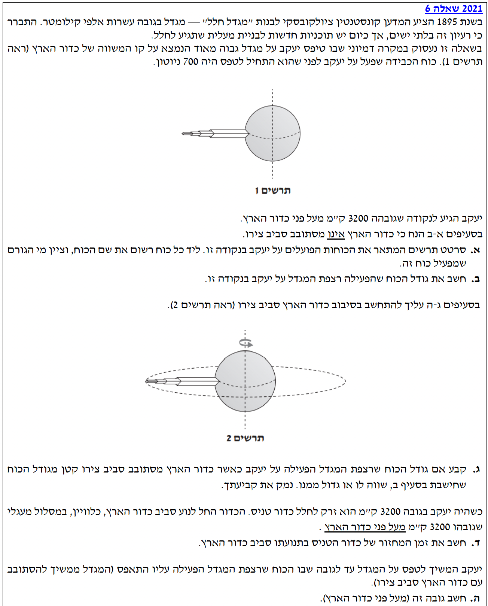

פתרון מודרך: מכניקה 2021 - שאלה 6 (כבידה)
פיזיקה / מכניקה 2021 / שאלה 6
פתרון מלא ומודרך, צעד-אחר-צעד, כולל הסברים אינטואיטיביים למושגי יסוד בכבידה ותנועה מעגלית.
עודכן:
--- --:--:--

[תמונת השאלה המקורית]
לא נמצאה תמונה בשם question-image.png באותה תיקייה.
- משקלו של יעקב על פני כדור הארץ (לפני הטיפוס): \( W_0 = 700 \text{ N} \)
- רדיוס כדור הארץ (מדף הנוסחאות): \( R_E = 6.38 \cdot 10^6 \text{ m} \)
- מסת כדור הארץ (מדף הנוסחאות): \( M_E = 5.974 \cdot 10^{24} \text{ kg} \)
- קבוע הגרביטציה (מדף הנוסחאות): \( G = 6.67 \cdot 10^{-11} \text{ N} \cdot \text{m}^2 / \text{kg}^2 \)
מה נתון: יעקב נמצא בגובה \( h = 3200 \text{ km} \) מעל פני כדור הארץ. אנו מניחים בסעיף זה שכדור הארץ אינו מסתובב סביב צירו.
המרה ליחידות תקניות (MKS): \( h = 3200 \text{ km} = 3.2 \cdot 10^6 \text{ m} \)
מה מחפשים: לסרטט תרשים כוחות הפועלים על יעקב בנקודה זו, ולציין מי הגורם המפעיל כל כוח.
נוסחאות ועקרונות בשימוש:
שימוש בתרשים גוף חופשי (FBD). הכוחות הם כוחות בסיסיים של מגע וכבידה.
פתרון צעד-אחר-צעד:
על יעקב פועלים שני כוחות בלבד, על ציר אחד אנכי:
- כוח כבידה (משקל) \( \vec{F}_G \) - פועל כלפי מטה (לכיוון מרכז כדור הארץ). הגורם המפעיל: כדור הארץ.
- כוח נורמלי \( \vec{N} \) - פועל כלפי מעלה (הרחק ממרכז כדור הארץ). הגורם המפעיל: רצפת המעלית במגדל.
תרשים 1: כוחות הפועלים על יעקב (ציר r חיובי כלפי מטה)
טיפ מורה:
זכרו, חוסר משקל בחלל לא נובע מהיעדר כבידה! יעקב נמצא בגובה של אלפי קילומטרים ועדיין פועל עליו כוח כבידה משמעותי מכדור הארץ. העובדה שהוא לא מסתובב (כרגע) אומרת שהוא עומד במקום, ולכן הרצפה חייבת לדחוף אותו למעלה כדי למנוע ממנו ליפול, בדיוק כמו בחדר שלכם עכשיו.
מה נתון: אותם נתונים מסעיף א'. כדור הארץ לא מסתובב, לכן יעקב במנוחה מוחלטת (תאוצה שווה לאפס). בנוסף, משקלו על פני כדור הארץ הוא \( W_0 = 700 \text{ N} \) ותאוצת הכובד היא בקירוב \( g = 10 \text{ m/s}^2 \).
מה מחפשים: את גודל הכוח הנורמלי \( N \) שהרצפה מפעילה על יעקב.
נוסחאות ועקרונות בשימוש:
\( \Sigma \vec{F} = 0 \)
\( F = mg \)
\( F = G\frac{m_1 m_2}{r^2} \)
החוק הראשון של ניוטון (שיווי משקל), חישוב כוח כובד (משקל) בקרבת פני כדור הארץ, וחוק הכבידה העולמי.
פתרון צעד-אחר-צעד:
מכיוון שיעקב במנוחה, שקול הכוחות עליו הוא אפס. על פי התרשים מסעיף א':
\[ \Sigma F = F_G - N = 0 \quad \Rightarrow \quad N = F_G \]
כלומר, הכוח הנורמלי שווה למשקלו של יעקב (כוח הכבידה הפועל עליו) בגובה זה. נמצא תחילה את מסתו של יעקב באמצעות כוח הכבידה המוכר לנו על פני כדור הארץ (משקלו, שנסמן כ-\( W_0 \)):
\[ W_0 = m \cdot g \quad \Rightarrow \quad 700 = m \cdot 10 \quad \Rightarrow \quad m = 70 \text{ kg} \]
המרחק של יעקב ממרכז כדור הארץ בגובה \( h \) הוא חיבור של רדיוס כדור הארץ והגובה:
\[ r = R_E + h = 6.38 \cdot 10^6 + 3.2 \cdot 10^6 = 9.58 \cdot 10^6 \text{ m} \]
כעת נציב את המסה שחישבנו ואת הרדיוס בחוק הכבידה העולמי כדי למצוא את הכוח הפועל עליו בגובה זה:
\[ F_G = G \frac{M_E m}{r^2} = 6.67 \cdot 10^{-11} \cdot \frac{5.974 \cdot 10^{24} \cdot 70}{(9.58 \cdot 10^6)^2} \]
\[ F_G = \frac{2.789 \cdot 10^{16}}{9.178 \cdot 10^{13}} \approx 303.9 \text{ N} \]
ולכן, מכיוון ש-\( N = F_G \), נקבל (בעיגול ל-3 ספרות מהותיות):
מסקנה: \( N \approx 304 \text{ N} \)
טיפ מורה:
במקום להסתבך, זכרו את הכלים שכבר יש לכם! אמנם יכולנו לחלץ את המסה של יעקב על ידי שימוש בחוק הכבידה העולמי של ניוטון על פני כדור הארץ, אבל אנחנו הרי יודעים ממכניקה בסיסית שתאוצת הכובד על פני כדור הארץ היא בקירוב \( g = 10 \text{ m/s}^2 \). לכן, הרבה יותר פשוט ומהיר להשתמש בנוסחה הישנה והמוכרת שלמדנו בעבר (\( W = mg \)) כדי למצוא את המסה, ורק אז להשתמש בנוסחאות הכבידה שלמדנו עכשיו.
מה נתון: כעת מתחשבים בסיבוב כדור הארץ סביב צירו. המגדל (ויעקב שבתוכו) משלימים סיבוב אחד בכל 24 שעות יחד עם כדור הארץ. לכן, יעקב מבצע תנועה מעגלית קצובה.
מה מחפשים: לקבוע האם גודל הכוח הנורמלי כעת יהיה קטן, שווה או גדול מהכוח שחושב בסעיף ב', ולנמק.
נוסחאות ועקרונות בשימוש:
\( \Sigma \vec{F} = m \vec{a} \)
\( a_R = \omega^2 r \)
החוק השני של ניוטון, ותאוצה רדיאלית בתנועה מעגלית.
פתרון צעד-אחר-צעד:
בתנועה מעגלית, יעקב אינו במנוחה. יש לו תאוצה רדיאלית \( a_R \) המכוונת תמיד למרכז המעגל (מרכז כדור הארץ). נקבע את הכיוון החיובי של ציר התנועה כלפי מרכז כדור הארץ, כך שיהיה בכיוון התאוצה הרדיאלית. בחירה מפורשת זו של הציר מסבירה מדוע במשוואת הכוחות כוח הכבידה מקבל סימן חיובי, והכוח הנורמלי (המנוגד לו) מקבל סימן שלילי (\( F_G - N_{new} \) ולא להפך):
\[ \Sigma F = F_G - N_{new} = m a_R \]
נבודד את הכוח הנורמלי החדש:
\[ N_{new} = F_G - m a_R \]
אנו יודעים כי הגודל \( m a_R \) הוא חיובי תמיד. מכאן נובע שבתנועה מעגלית מתקיים \( N_{new} < F_G \).
מכיוון שבסעיף ב' מצאנו ללא סיבוב כי \( N_{old} = F_G \), המסקנה היא ש:
\[ N_{new} < N_{old} \]
מסקנה: הכוח הנורמלי כעת קטן מהכוח שחושב בסעיף ב'.
טיפ מורה (האינטואיציה מאחורי המתמטיקה):
מדוע בעצם הכוח הנורמלי קטן יותר? תחשבו על זה כך: כשכדור הארץ לא מסתובב, יעקב במנוחה ולכן שקול הכוחות שווה בדיוק לאפס. אבל בתנועה מעגלית, חובה שיהיה שקול כוחות (שאינו אפס) המכוון למרכז המעגל, כדי לייצר את התאוצה הרדיאלית. מאחר שכוח הכבידה המושך למטה הוא קבוע, הדרך היחידה לקבל שקול כוחות כלפי מטה היא שהכוח הנורמלי הדוחף למעלה פשוט יקטן. התוצאה: יעקב נלחץ פחות לרצפה ומרגיש מעט "קל" יותר!
מה נתון: יעקב זורק כדור טניס מהמעלית כך שהכדור נע כמו לוויין במסלול מעגלי. נתוני המסלול:
- גובה הכדור: \( h = 3.2 \cdot 10^6 \text{ m} \)
- רדיוס המסלול (חושב קודם): \( r = 9.58 \cdot 10^6 \text{ m} \)
מה מחפשים: את זמן המחזור \( T \) של כדור הטניס בתנועתו סביב כדור הארץ.
נוסחאות ועקרונות בשימוש:
\( \Sigma \vec{F} = m \vec{a} \)
\( F = G\frac{m_1 m_2}{r^2} \)
\( a_R = \omega^2 r \)
\( \omega = \frac{2\pi}{T} \)
החוק השני של ניוטון, חוק הכבידה העולמי, וקשרים קינמטיים של תנועה מעגלית. העיקרון הפיזיקלי: על כדור הטניס (כמו לוויין) פועל רק כוח הכבידה המהווה את הכוח הצנטריפטלי.
פתרון צעד-אחר-צעד:
נרשום את משוואת התנועה של הכדור (נסמן את מסתו באות קטנה \( m_{ball} \)):
\[ \Sigma F = F_G = m_{ball} a_R \]
נציב את חוק הכבידה, ונפתח את ביטוי התאוצה הרדיאלית באמצעות המהירות הזוויתית וזמן המחזור (\( a_R = \omega^2 r = (\frac{2\pi}{T})^2 r \)):
\[ G \frac{M_E \cdot m_{ball}}{r^2} = m_{ball} \left(\frac{2\pi}{T}\right)^2 r \]
\[ G \frac{M_E \cdot m_{ball}}{r^2} = m_{ball} \frac{4\pi^2 r}{T^2} \]
נצמצם את מסת הכדור (מסקנה חשובה: זמן המחזור אינו תלוי במסת הלוויין!) ונבודד את \( T \):
\[ T^2 = \frac{4\pi^2 r^3}{G M_E} \quad \Rightarrow \quad T = \sqrt{\frac{4\pi^2 r^3}{G M_E}} \]
נציב את כל הנתונים הפיזיקליים מהדף:
\[ T = \sqrt{ \frac{4 \cdot \pi^2 \cdot (9.58 \cdot 10^6)^3}{6.67 \cdot 10^{-11} \cdot 5.974 \cdot 10^{24}} } \]
\[ T = \sqrt{ \frac{39.478 \cdot 8.79 \cdot 10^{20}}{3.985 \cdot 10^{14}} } = \sqrt{ \frac{3.47 \cdot 10^{22}}{3.985 \cdot 10^{14}} } = \sqrt{ 8.71 \cdot 10^7 } \approx 9332 \text{ s} \]
נמיר את הזמן לפורמט כתיב מדעי וספרות מהותיות, ואפשר גם להמיר לשעות לשם המחשה (\( 9332 / 3600 \approx 2.59 \)):
מסקנה: \( T \approx 9.33 \cdot 10^3 \text{ s} \) (כ- 2.59 שעות)
טיפ מורה:
זהירות! טעות נפוצה היא להציב את הנתון \( h \) במקום את הרדיוס השלם \( r \). כוח הכבידה פועל ממרכזי המסות, ולכן תמיד במשוואות הכבידה, ה-\( r \) במכנה מייצג את המרחק ממרכז כדור הארץ ולא את הגובה מפני השטח!
מה נתון: יעקב ממשיך לטפס למעלה על המגדל, אשר ממשיך להסתובב יחד עם כדור הארץ. בנקודה מסוימת, הכוח הנורמלי מתאפס (\( N = 0 \)).
זמן המחזור של המגדל שווה לזמן של כדור הארץ: \( T_E = 24 \text{ h} \). נמיר ל-MKS:
\( T_E = 24 \cdot 3600 = 86400 \text{ s} \)
מה מחפשים: את הגובה \( h_{new} \) מעל פני כדור הארץ בו אירוע זה מתרחש.
נוסחאות ועקרונות בשימוש:
\( \Sigma \vec{F} = m \vec{a} \)
\( F = G\frac{m_1 m_2}{r^2} \)
\( a_R = \omega^2 r \)
\( \omega = \frac{2\pi}{T} \)
החוק השני של ניוטון, חוק הכבידה העולמי, וקשרים קינמטיים של תנועה מעגלית. כמו כן, עיקרון גיאומטרי פשוט: המרחק ממרכז כדור הארץ שווה לרדיוס כדור הארץ ועוד הגובה מהקרקע.
פתרון צעד-אחר-צעד:
מכיוון שנתון לנו כי בנקודה זו \( N = 0 \), משוואת הכוחות (כפי שראינו בסעיף ג') הופכת ל:
\[ F_G - 0 = m a_R \]
כמו בסעיף הקודם, נפתח את התאוצה הרדיאלית בעזרת המהירות הזוויתית והזמן, ונציב את חוק הכבידה (נסמן את הרדיוס החדש ב- \( r_{new} \)):
\[ G \frac{M_E m}{r_{new}^2} = m \left(\frac{2\pi}{T_E}\right)^2 r_{new} \]
\[ G \frac{M_E m}{r_{new}^2} = m \frac{4\pi^2 r_{new}}{T_E^2} \]
שימו לב: המצב המכני של יעקב בנקודה זו זהה לחלוטין לזה של לוויין! הוא מסתובב סביב כדור הארץ ורק כוח הכבידה פועל עליו. נצמצם את מסתו \( m \) ונחלץ את הרדיוס \( r_{new} \):
\[ r_{new}^3 = \frac{G M_E T_E^2}{4\pi^2} \quad \Rightarrow \quad r_{new} = \sqrt[3]{\frac{G M_E T_E^2}{4\pi^2}} \]
נציב את הנתונים (שוב, חשוב לעבוד עם השניות שחישבנו עבור היממה):
\[ r_{new} = \sqrt[3]{ \frac{6.67 \cdot 10^{-11} \cdot 5.974 \cdot 10^{24} \cdot (86400)^2}{4 \cdot \pi^2} } \]
\[ r_{new} = \sqrt[3]{ \frac{3.985 \cdot 10^{14} \cdot 7.465 \cdot 10^9}{39.478} } = \sqrt[3]{ 7.536 \cdot 10^{22} } \approx 4.22 \cdot 10^7 \text{ m} \]
מצאנו את המרחק ממרכז כדור הארץ (\( r_{new} \)). מכיוון שמרחק זה שווה לרדיוס כדור הארץ בתוספת הגובה מעל פני השטח (\( r_{new} = R_E + h_{new} \)), נחסר את רדיוס כדור הארץ כדי למצוא את הגובה:
\[ h_{new} = r_{new} - R_E = 42.2 \cdot 10^6 - 6.38 \cdot 10^6 = 35.82 \cdot 10^6 \text{ m} = 3.58 \cdot 10^7 \text{ m} \]
מסקנה: הגובה בו יעקב מרגיש חוסר משקל הוא \( h \approx 3.58 \cdot 10^7 \text{ m} \)
טיפ מורה:
זהו רגע ה"אאוריקה" של השאלה! הגובה שחישבנו כעת הוא למעשה מסלול מיוחד מאוד הנקרא מסלול גאוסטציונרי (Geostationary orbit). בגובה זה, זמן ההקפה הטבעי של כבידת כדור הארץ משתווה בדיוק לזמן הסיבוב העצמי של כדור הארץ. לווייני תקשורת (כמו עמוס) מוצבים בדיוק בגובה הזה כדי שיישארו "מרחפים" מעל אותה נקודה קבועה בכדור הארץ ללא צורך במנועים! המשמעות המדהימה של \( N=0 \) כאן היא שהרצפה למעשה לא מפעילה שום כוח על יעקב. אם היינו מסלקים את המגדל באותו רגע, יעקב פשוט היה נשאר שם, ממשיך לרחף כלוויין בחלל מעל אותה נקודה בכדור הארץ, בלי להרגיש בשום שינוי!